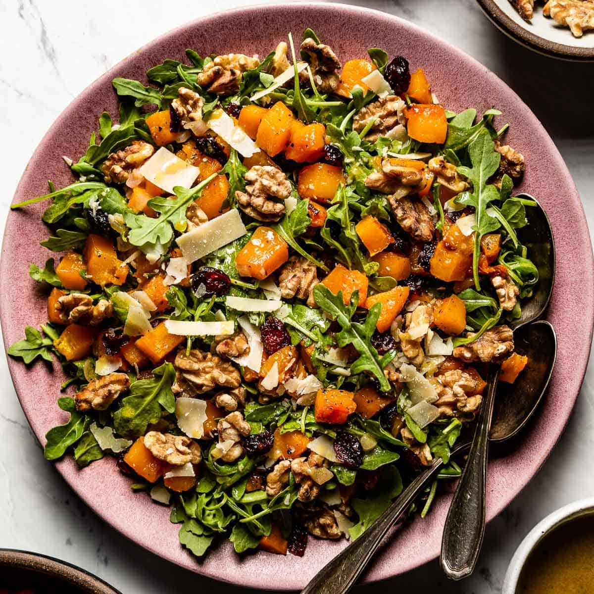

Fall Roasted Squash Salad

We have made this recipe before with warm cider vinaigrette. Great light meal for the weeknights.
- 1 (1 1/2-pound) butternut squash, peeled and 3/4-inch diced
- Good olive oil
- 1 tablespoon pure maple syrup
- Kosher salt and freshly ground black pepper
- 3 tablespoons dried cranberries (optional)
- 3/4 cup apple cider or apple juice
- 2 tablespoons cider vinegar
- 2 tablespoons minced shallots
- 2 teaspoons Dijon mustard
- 4 ounces baby arugula, washed and spun dry
- 1/2 cup walnuts halves, toasted or whatever nut you prefer, I like pecans
- 3/4 cup freshly grated Parmesan, or goat cheese works well depending on your preference
- Preheat the oven to 400 degrees F.
- Place the butternut squash on a sheet pan. Add 2 tablespoons olive oil, the maple syrup, 1 teaspoon salt and 1/2 teaspoon pepper and toss.
- Roast the squash for 15 to 20 minutes, turning once, until tender. Add the cranberries to the pan for the last 5 minutes.
- While the squash is roasting, combine the apple cider, vinegar, and shallots in a small saucepan and bring to a boil over medium-high heat.
- Cook for 6 to 8 minutes, until the cider is reduced to about 1/4 cup.
- Off the heat, whisk in the mustard, 1/2 cup olive oil, 1 teaspoon salt, and 1/2 teaspoon of pepper.
- Place the arugula in a large salad bowl and add the roasted squash mixture, the walnuts, and the grated Parmesan.
- Spoon just enough vinaigrette over the salad to moisten and toss well. Sprinkle with salt and pepper and serve immediately.